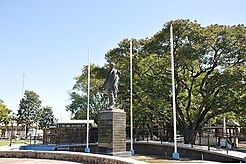
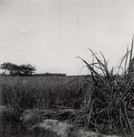

Orígenes y fundación
Bella Unión, en el extremo norte del departamento de Artigas, es una de las ciudades más particulares de Uruguay. Fue fundada oficialmente el 13 de mayo de 1829 por el general Fructuoso Rivera bajo el nombre de Santa Rosa del Cuareim. El sitio se eligió por su posición estratégica en la confluencia de los ríos Uruguay y Cuareim, una zona históricamente habitada por pueblos guaraníes y charrúas, que se beneficiaban de la abundancia de agua y tierras fértiles.
A lo largo del siglo XIX, el área fue un punto de frontera disputado entre los imperios español y portugués, y luego entre Uruguay, Brasil y Argentina. El nombre Bella Unión se adoptó a mediados del siglo XIX, simbolizando la unión de tres pueblos y tres banderas —uruguaya, argentina y brasileña— en una convivencia fronteriza única.
Siglo XX: crecimiento agrícola y social
Durante las primeras décadas del siglo XX, la región experimentó un fuerte crecimiento gracias al cultivo de la caña de azúcar y la instalación de ingenios azucareros, que atrajeron mano de obra desde distintas partes del país. El establecimiento de cooperativas como CALNU (Cooperativa Agraria Limitada de Nueva Bella Unión) fue fundamental para el desarrollo económico y social de la zona.
La ciudad también fue testigo de importantes movimientos sindicales y sociales vinculados a los trabajadores cañeros, que marcaron una parte significativa de la historia reciente de Uruguay. El esfuerzo colectivo y el espíritu cooperativo son parte esencial de la identidad de Bella Unión.
Bella Unión en la actualidad
Hoy, Bella Unión combina tradición e innovación. Se ha convertido en un polo regional del norte uruguayo, con una fuerte identidad multicultural y una economía diversificada. Su ubicación en la triple frontera con Argentina y Brasil continúa dándole un carácter abierto y cosmopolita, donde conviven idiomas, costumbres y tradiciones de los tres países.
En sus calles aún se respira la historia de los pioneros y el trabajo de generaciones que convirtieron un rincón fronterizo en un símbolo de unión y progreso